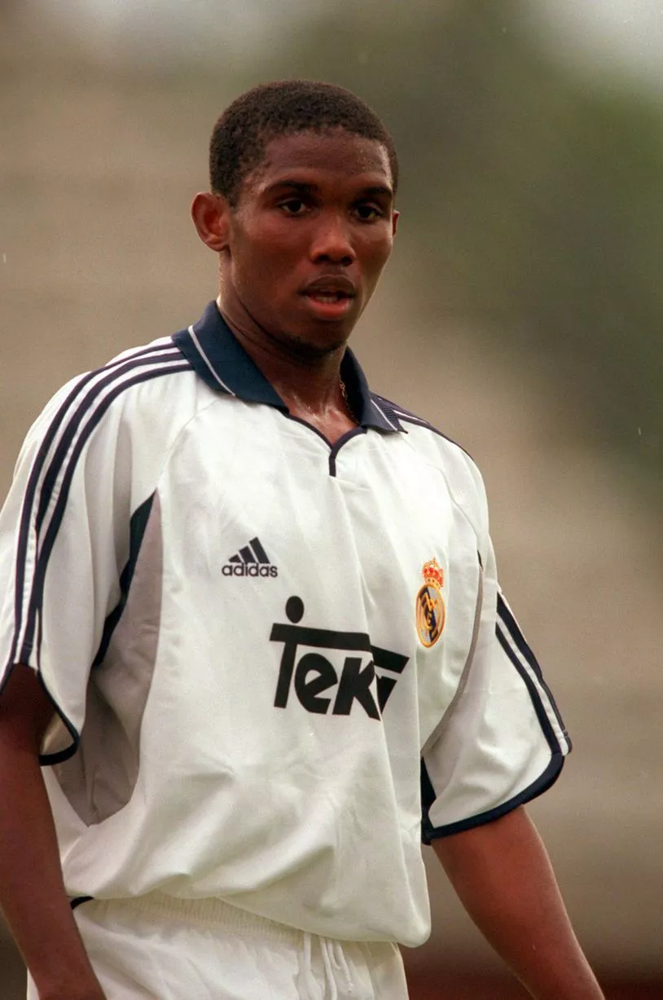

SAMUEL ETO'O
BIOGRAPHIE DU PERSONNAGE

Samuel Eto'o Fils, plus connu sous le nom Samuel Eto'o né le 10 mars 1981 à Nkon à Yaoundé au Cameroun,est un footballeur internationnal camerounais. Durant sa carriere, il evolu au poste d'attaquant et possede egalement une nationalite espagnole depuis 2007 et est l'actuel president de le federation camerounaise de football(FECAFOOT)depuis decembre 2021
Enfance et formation
Natif de Nkon, banlieue de Yaoundé, Samuel Eto'o Fils fait ses premiers pas dans le quartier de Mvog-Ada, l'un des plus démunis de la capitale camerounaise. Pour offrir une vie plus confortable à ses six enfants (trois garçons; Samuel, David et Etienne Eto'o, et autant de filles), David Eto'o, le père, comptable de métier, conduit les siens à Douala. La famille s'installe à New-bell, quartier sensible de la cité portuaire. Sur les terrains vagues bosselés, Samuel, fan de Roger Milla, dribble en liberté avant de rejoindre l'Union camerounaise des brasseries de Douala. À treize ans et demi, l'attaquant impose son style en deuxième division locale. Une poignée de buts et il débute avec les Cadets camerounais, avant d'être surclassé
Alors qu'il a quinze ans, Samuel Eto'o rejoint la France pour tenter sa chance dans un club européen4. Arrivé à Marseille, il passe par Carpentras avant de rejoindre la capitale. Il ne dispose alors que d'un visa de dix jours, bien insuffisant pour s'installer à Paris et ne peut pas sortir régulièrement de son appartement, pour ne pas risquer d'être refoulé. Malgré les difficultés d'intégration et celles liées au climat, Eto'o reste plusieurs mois à Paris avec sa famille et demande à intégrer le centre de formation du Paris Saint-Germain. Sans-papiers, le club parisien refuse de le recruter
Il rentre au Cameroun et intègre l'école de football de la Kadji Sport Academies basée à Douala, capitale économique et principal port d'entrée au Cameroun, où le buteur fait partie des meilleurs espoirs locaux. Le club du Havre, en partenariat avec l'académie et prioritaire sur les joueurs, l'invite à un essai en Normandie. Eto'o reste près d'une semaine sur place mais n'est pas retenu. Pierre Foissac, le recruteur havrais qui le repère au Cameroun, se souvient : « Le formateur qui l'a observé ne l'a pas trouvé bon... Il y avait cinq joueurs cette semaine-là. On en a gardé quatre et on a laissé filer la pépite ». Eto'o prend part à d'autres essais, à l'AS Saint-Étienne ou encore à l'AS Cannes mais ils ne se révèlent pas concluants.Il rentre au Cameroun et intègre l'école de football de la Kadji Sport Academies basée à Douala, capitale économique et principal port d'entrée au Cameroun, où le buteur fait partie des meilleurs espoirs locaux. Le club du Havre, en partenariat avec l'académie et prioritaire sur les joueurs, l'invite à un essai en Normandie. Eto'o reste près d'une semaine sur place mais n'est pas retenu. Pierre Foissac, le recruteur havrais qui le repère au Cameroun, se souvient : « Le formateur qui l'a observé ne l'a pas trouvé bon... Il y avait cinq joueurs cette semaine-là. On en a gardé quatre et on a laissé filer la pépite ». Eto'o prend part à d'autres essais, à l'AS Saint-Étienne ou encore à l'AS Cannes mais ils ne se révèlent pas concluants.
Il rentre au Cameroun et intègre l'école de football de la Kadji Sport Academies basée à Douala, capitale économique et principal port d'entrée au Cameroun, où le buteur fait partie des meilleurs espoirs locaux. Le club du Havre, en partenariat avec l'académie et prioritaire sur les joueurs, l'invite à un essai en Normandie. Eto'o reste près d'une semaine sur place mais n'est pas retenu. Pierre Foissac, le recruteur havrais qui le repère au Cameroun, se souvient : « Le formateur qui l'a observé ne l'a pas trouvé bon... Il y avait cinq joueurs cette semaine-là. On en a gardé quatre et on a laissé filer la pépite ». Eto'o prend part à d'autres essais, à l'AS Saint-Étienne ou encore à l'AS Cannes mais ils ne se révèlent pas concluants.
Débuts et difficultés à s'imposer à Madrid (1996-2000)

En 1996, Samuel Eto'o retourne en Europe avec un visa en règle. Arrivé à l'aéroport de Barajas, à Madrid, il commence une période d'essai avec le prestigieux club espagnol du Real Madrid. Alors qu'il n'a que quinze ans, il signe un contrat avec le club madrilène. Lors de sa première saison, il évolue avec la Castilla, l'équipe réserve madrilène, car encore trop jeune pour jouer en équipe première.
Samuel Eto'o est prêté au CD Leganés lors de la saison 1997-1998, qui évolue alors en 2e division espagnole. Il y fait ses débuts le 30 août 1997 et marque son premier but quelques jours plus tard, le 10 septembre face à Vallecas en Coupe du Roi. Eto'o fait partie du onze titulaire qui inaugure le stade de Butarque, le 14 février 1998. En 30 matchs joués avec le club de deuxième division, il trouve le chemin des filets à quatre reprises.
Eto'o retourne au Real Madrid, lors de la saison 1998-1999, mais ne joue qu'un seul match, son premier en Liga face à l'Espanyol de Barcelone. Pour la seconde partie de saison, Samuel est prêté six mois à l'Espanyol mais ne joue qu'un seul match, entrant en jeu contre le Real Valladolid en Coupe du Roi au mois de février 1999.
Pour l'exercice 1999-2000, Eto'o retourne à nouveau à Madrid où il est barré par Raúl, Fernando Morientes ou encore la nouvelle recrue Nicolas Anelka. Il joue tout de même sept rencontres dont 3 en Ligue des champions mais ne marque aucun but. Le 21 septembre 1999, Eto'o joue son premier match de Ligue des champions à l'occasion de la réception du Molde FK (4-1). En janvier 2000, l'attaquant participe au Championnat du monde des clubs dont il joue le match pour la troisième place. Quelques jours plus tard, Eto'o est prêté au RCD Majorque six mois avec option d'achat. Mais en fin de saison, grâce à ses entrées en jeu en phase de groupe de Ligue de champions, face au Molde FK, au match aller le 21 Septembre 1999 (4-1) à la 74’ en remplaçant le brésilien Sávio et au retour le 3 Novembre 1999 (1-0) à la 55’ en remplaçant le jeune Espagnol Carlos Aranda, et à la suite de la victoire du Real face à valence en finale de ligue de champions (1999-2000), il remporte donc sa première ligue des champions sous les couleurs du Real Madrid. Il est aussi entré en jeu au match aller face à Porto match remporté par le Real sur le score de (3-1) à la 90’ en remplaçant Sávio.
Révélation à Majorque (2000-2004)
En treize matchs joués en première division lors de son prêt au RCD Majorque, Samuel Eto'o délivre quatre passes décisives et marque six buts. Majorque achète 50 % des droits de Samuel Eto'o pour 7,2 millions d'euros (1 200 milliards de pesetas). Madrid conserve l'autre moitié des droits du joueur camerounais afin de le racheter à moitié prix ou récupérer une importante part d'un transfert éventuel d'Eto'o vers un autre club
Dès sa première saison complète avec Majorque, le club finit troisième du championnat derrière le Real Madrid et le Deportivo La Corogne, et se qualifie en Ligue des champions. Samuel Eto'o contribue à cette troisième place en marquant 11 buts en Liga.
Eto'o marque son premier but en Ligue des champions lors du match retour du troisième tour de qualification contre le Hajduk Split. Défaite 1-0 à l'extérieur, son but permet à son équipe de l'emporter 2-0 après prolongation. La saison 2001-2002 est plus difficile pour Majorque, tant au niveau national qu'européen. Majorque termine troisième de son groupe en C1. Eto'o permet à son équipe de l'emporter sur le terrain de Schalke 04 (0-1). L'équipe est repêchée en seizièmes de finale de la Coupe UEFA, mais s'incline contre le FC Slovan Liberec (1-3, 1-2), malgré un but d'Eto'o au retour. À la mi-saison, Eto'o s'absente pour disputer et remporter la Coupe d'Afrique des nations. En championnat, le club termine 16e à seulement trois points du premier relégable. Eto'o est moins prolifique et ne marque que six buts en trente journées.
La saison 2002-2003 est marquée par deux matchs contre l'ancien club d'Eto'o, le Real Madrid. Majorque gagne 5-1 contre le club de la capitale en championnat avec un but et deux passes décisives d'Eto'o. En Coupe du Roi, Majorque obtient une autre large victoire (4-0) en quart de finale retour avec un doublé d'Eto'o en cinq minutes. Ses bonnes performances lui permettent d'être élu Joueur africain de l'année en 2003 pour la première fois de sa carrière. Le RCD Majorque termine au milieu de tableau du championnat, à la neuvième position. Parti disputer la Coupe des confédérations avec sa sélection, le buteur reçoit l'autorisation de repartir en Espagne, en pleine compétition, pour y disputer la finale de Coupe du Roi, remportée contre le Recreativo Huelva grâce à un doublé d'Eto'o (3-0)
Lors de la saison 2003-2004, Majorque termine à une modeste onzième place en championnat. Lors d'un match entre Majorque et son ancien club, le Real Madrid, Eto'o marque un doublé. Il inscrit le premier but de la partie, en lobant Iker Casillas après un sprint de quarante mètres, puis il redonne l'avantage aux siens, en crucifiant le gardien, après une série de dribbles. En Coupe UEFA 2003-2004, au premier tour, Eto'o réalise un triplé lors du match retour contre l'APOEL Nicosie (4-2). Au second tour, Majorque écarte le FC Copenhague. En seizième de finale contre le Spartak Moscou, Eto'o participe à la victoire à l'extérieur avec un but (3-0). Il ne peut rien contre l'élimination en quart contre Newcastle United.À l'été 2004, après quatre ans à Majorque, Eto'o quitte le club en tant que meilleur buteur de son histoire en Liga avec 54 buts et en Ligue des champions avec deux buts
Confirmation au FC Barcelone (2004-2009)
.jpg)
Après une difficile négociation entre Majorque, le Real Madrid et FC Barcelone - le Président madrilène Florentino Pérez n’envisage pas de céder Eto'o et se sent prêt à le racheter -, Samuel est finalement transféré au club catalan à l'été 2004 pour 24 millions d'euros Au Barça, Eto'o est d'abord mis en concurrence avec Henrik Larsson, arrivé au même moment. Mais l'attaquant suédois se blesse rapidement et voit l'attaquant camerounais devenir titulaire au sein du trio d'attaque, aux côtés de Ludovic Giuly et Ronaldinho. Eto'o marque pour son premier match face au Racing de Santander en août 2004, en Liga. Le 20 novembre, à l'instar des saisons précédentes, Eto'o inscrit un but face à son club formateur et rival de sa nouvelle équipe, le Real Madrid. Il participe ainsi à la victoire des siens au stade Santiago Bernabéu par trois buts à zéro. Fin 2004, le Camerounais est élu, pour la deuxième fois d'affilée, joueur africain de l'année devant l'Ivoirien Didier Drogba. En fin de saison, le 14 mai 2005, Eto'o égalise contre Levante UD et permet aux Catalans d'être sacrés champions d'Espagne, son premier titre de champion d'Espagne et le premier du Barça après 5 saisons sans titre. Samuel est l'auteur de 24 buts en Liga d'après le décompte de Marca qui attribue le prix du Pichichi, et le classe comme deuxième meilleur buteur du Championnat d'Espagne derrière Diego Forlán auteur de 25 buts qui reçoit le prix pichichi recompensant le meilleur buteur du championnat espagnol. Cependant le classement de Marca n'est pas celui des instances du football en Espagne car selon la ligue espagnole LFP et la fédération espagnole RFEF, Samuel Eto'o a inscrits 25 buts et est donc officiellement meilleur buteur du championnat à égalité avec Diego Forlán. La polémique vient d'un but inscrit lors de la 24e journée du championnat face à Mallorque que l'arbitre ainsi que la LFP et la RFEF décomptent pour Eto'o mais que le quotidien pro madrilène Marca décompte pour Deco, une grosse injustice du journal espagnol qui prive le camerounais cette année-là du soulier d'or européen qui lui était dû au même titre que Diego Forlán et Thierry Henry tous les 2 souliers d'or avec 25 buts chacun. Revanchard de n'avoir pas percé au Real Madrid à l'époque où il en était joueur, il dérape verbalement au Camp Nou devant près de 100 000 supporters, lors de la fête organisée pour la 17e Liga remportée par le club, en prononçant à six reprises, micro en main : « Madrid, salaud, salue le champion ! », jusqu'à ce qu'un coéquipier ne lui prenne le micro. Cette attitude est critiquée par les médias espagnols. Il marque aussi quatre fois en Ligue des champions pour sa première saison mais est éliminé en huitièmes de finale par Chelsea.
En fin d'année 2005, Eto'o voit Ronaldinho remporter le Ballon d'or 2005. Alors qu'il est positionné à une modeste 10e place, Eto'o rend publique sa déception[réf. nécessaire]. Il se console par une troisième place au titre de meilleur footballeur de l'année FIFA, et par le trophée du joueur africain de l'année remporté pour la troisième fois consécutive. Le 25 février 2006, sur la pelouse du Real Saragosse, pour la deuxième fois, les supporters du club local profèrent des insultes racistes à l'encontre d'Eto'o dès qu'il touche le ballon. À la 76e minute, Samuel prend subitement la direction des vestiaires, souhaitant quitter le match. Ses partenaires le retiennent, tout comme l'arbitre et certains joueurs de l'équipe adverse. Son entraîneur Frank Rijkaard le convainc de reprendre la partie[réf. nécessaire]. Au meilleur de sa forme, Eto'o enchaîne les buts avec le Barça, sacré champion d'Espagne et d'Europe. Avec ses 26 buts en Liga, Samuel est pour la deuxième annéé d'affilée officiellement meilleur buteur du championnat espagnol mais devient Pichichi pour la première fois. Dans la campagne de Ligue des champions, il marque six buts dont celui de l'égalisation en finale contre Arsenal, à un quart d'heure du terme de la rencontre. Il marque aussi contre Chelsea en huitième de finale aller à Stamford Bridge pour la revanche de l'année précédente. En fin de saison, lors de la céremonie de remise des prix organisée par l'UEFA, Samuel Eto'o est élu meilleur attaquant de l'année UEFA en 2006.Lors de la saison 2006-2007, le trio magique « REM » (Ronaldinho, Eto'o, Messi) est constitué mais celle-ci commence mal pour Eto'o. Il se blesse tout seul lors de la rencontre de Ligue des champions contre le Werder Brême et est indisponible cinq mois. Il fait son retour au mois de février 2007 dans une équipe barcelonaise moins en réussite que les deux dernières saisons. Eto'o peine à retrouver son niveau. Lors d'un match contre le Racing Santander, il est laissé sur le banc par Franck Rijkaard, refuse d'entrer en jeu et sèche l'entraînement du lendemain. Ronaldinho lui reproche son comportement individualiste et révèle la nature des rapports qui sévissent entre les joueurs et les dirigeants. « Au FC Barcelone, il y a une guerre, d'un côté ceux qui m'ont fait venir ici (Joan Laporta) et de l'autre côté, ceux (Sandro Rosell) qui ont fait venir d'autres joueurs. Je sais que mes buts font du mal à certains, et pour ça je prends des coups. Ceux qui viennent régler les problèmes des vestiaires en conférence de presse sont de mauvaises personnes. Si cela continue, je révélerai à mon tour d'autres secrets » déclare l'attaquant camerounais. Eto'o marque tout de même 11 buts en 19 matchs de championnat, mais Barcelone perd son titre de champion d'Espagne au profit du rival madrilène et est éliminé en huitième de finale de Ligue des champions.À l'été 2007, Thierry Henry signe au Barça. La presse, particulièrement enthousiaste à l'idée de voir le quatuor Ronaldinho-Messi-Henry-Eto'o évoluer sous le même maillot, le surnomme "les 4 fantastiques". Mais Eto'o se blesse à nouveau en début de saison, lors d'un match amical contre l'Inter Milan, victime d'une fracture du fémur droit. Dans le même temps, il est annoncé partant vers le Milan AC, champion d'Europe 2007, pour plus de 60 millions d'euros, mais il refuse l'offre souhaitant rester en Espagne. Le 17 octobre 2007, Samuel Eto'o jure sur la constitution espagnole et obtient la double nationalité. Dès son retour sur la pelouse début décembre 2007, il marque en Ligue des champions contre le VfB Stuttgart et trois jours plus tard inscrit un doublé chez le Valence CF pour une victoire 3-0. Au début de l'année 2008, il participe à la CAN 2008 avec le Cameroun contre le gré de son club qui le trouve trop juste physiquement. De retour du Ghana, il finit la saison en ayant marqué 16 buts en 18 matchs de Liga, mais dans une équipe du Barça décadente malgré l'éclosion de Messi. Inquiet du comportement de ses joueurs majeurs, le président Joan Laporta aurait lancé une opération espionnage pour dévoiler au grand jour leurs vices cachés[réf. nécessaire]. Pour la deuxième année consécutive, le Barça ne remporte aucun trophée.À l'été 2007, Thierry Henry signe au Barça. La presse, particulièrement enthousiaste à l'idée de voir le quatuor Ronaldinho-Messi-Henry-Eto'o évoluer sous le même maillot, le surnomme "les 4 fantastiques". Mais Eto'o se blesse à nouveau en début de saison, lors d'un match amical contre l'Inter Milan, victime d'une fracture du fémur droit. Dans le même temps, il est annoncé partant vers le Milan AC, champion d'Europe 2007, pour plus de 60 millions d'euros, mais il refuse l'offre souhaitant rester en Espagne. Le 17 octobre 2007, Samuel Eto'o jure sur la constitution espagnole et obtient la double nationalité. Dès son retour sur la pelouse début décembre 2007, il marque en Ligue des champions contre le VfB Stuttgart et trois jours plus tard inscrit un doublé chez le Valence CF pour une victoire 3-0. Au début de l'année 2008, il participe à la CAN 2008 avec le Cameroun contre le gré de son club qui le trouve trop juste physiquement. De retour du Ghana, il finit la saison en ayant marqué 16 buts en 18 matchs de Liga, mais dans une équipe du Barça décadente malgré l'éclosion de Messi. Inquiet du comportement de ses joueurs majeurs, le président Joan Laporta aurait lancé une opération espionnage pour dévoiler au grand jour leurs vices cachés[réf. nécessaire]. Pour la deuxième année consécutive, le Barça ne remporte aucun trophée.
À l'intersaison 2008, le FC Barcelone opère plusieurs changements durant l'été. Frank Rijkaard est licencié et remplacé par l'ancienne gloire du club, Pep Guardiola. Des titulaires tels que Ronaldinho et Deco sont transférés, Guardiola considérant qu'ils possèdent trop d'ego et ont une mauvaise influence sur l'équipe. Eto'o, faisant partie de ce cercle de joueurs indésirables, est annoncé dans différents clubs (Chelsea, Milan AC, Lyon, Tottenham, Manchester City ou encore un retour au Real Madrid), même les plus insolites telles que le FC Bunyodkor, champion d'Ouzbékistan qui lui propose un salaire de 40 millions d’euros. À la suite d'une bonne pré-saison et notamment huit buts lors des matches amicaux, le nouvel entraîneur du Barça décide de conserver Eto'o. L'attaquant marque 30 buts en 36 matchs de championnat, dont un quadruplé contre le Real Valladolid, un triplé contre Almería et son traditionnel but contre le Real, et termine à la seconde place du classement des buteurs de la Liga, à nouveau derrière Diego Forlán. Il inscrit aussi quatre buts en phase finale de Ligue des champions, six en comptant son doublé à l'aller lors du troisième tour préliminaire contre le Wisla Cracovie. En finale de C1 à Rome, Samuel Eto'o est l'un des artisans de la victoire contre Manchester avec un but à la 10e minute. Avec le Barça, il remporte un triplé historique : Championnat-Coupe d'Espagne-Ligue des champions. Il est une pièce essentielle de l'exceptionnelle saison du club catalan.
Eto'o est, avec 152 buts en 200 matchs toutes compétitions confondues (0,76 but par match), l'un des meilleurs buteurs de l'histoire du FC Barcelone derrière d'anciennes gloires comme César Rodríguez, Paulino Alcántara ou László Kubala. Le Camerounais est élu meilleur « 9 » de l'histoire du club par les socios.
Des titres à l'Inter Milan et découverte de la Russie (2009-2013)

Le 27 juillet 2009, en échange de Zlatan Ibrahimović et de 46 millions d'euros, Eto'o signe un contrat de cinq ans avec l'Inter Milan, son entraîneur au FC Barcelone, Pep Guardiola, ne comptant plus sur lui42. Il touche un salaire annuel de 10,5 millions d’euros et des primes diverses évaluées à 3 millions d’euros, faisant de lui le footballeur le mieux payé en Italie. Il dira lors de sa première conférence de presse : « Je suis Samuel Eto'o et je ne veux être comparé à personne d'autre. Je suis venu pour gagner la Ligue des champions et je suis là où je veux être ». Eto'o porte le numéro 9 à l'Inter Milan. À l'Inter, Milito est avant-centre, préféré à Eto'o décalé côté gauche. Pour son premier match officiel, Samuel réduit l'écart lors de la Supercoupe d'Italie disputée et perdue contre la Lazio de Rome à Pékin (1-2). Il inscrit son premier but en Serie A sur un penalty lors de la première journée contre Bari (1-1). En Ligue des champions, l'Inter tombe dans le même groupe que le Barça, ancien club d'Eto'o. Samuel doit attendre la sixième et dernière journée de phase de poule pour inscrire son premier but européen avec son nouveau club, à domicile face au Rubin Kazan (2-0)12. Toute la saison, Eto'o joue sur le côté gauche de l'attaque, son entraîneur José Mourinho lui préférant l'argentin Diego Milito dans l'axe. À un nouveau poste, Eto'o marque moins mais brille tout autant dans le jeu. En huitième de finale retour de C1 à Stamford Bridge contre Chelsea, le Camerounais offre la victoire à son équipe (0-1). Il récidive contre la Fiorentina en demi-finale retour de la Coupe d'Italie. Les Interistes remportent la finale contre l'AS Rome. Lors de la 38e et dernière journée de championnat, l'Inter s'offre le 18e Scudetto de son histoire, le cinquième d'affilée. Après un nul et une défaite en poule, l'Inter Milan retrouve le Barça en demi-finale de C1 et se qualifie pour la finale. Samuel Eto'o dispute sa troisième finale de Ligue des champions en cinq ans, après 2006 et 2009. L'Inter Milan remporte la compétition en battant le Bayern Munich (2-0). Samuel Eto'o devient donc le premier joueur de l'histoire à gagner deux années d'affilée le triplé championnat-coupe nationale-Ligue des champions avec deux clubs différents. Il entre également dans le cercle très fermé des joueurs ayant gagné deux Ligues des champions consécutives avec deux clubs différents. À l'aube de la saison 2010-2011, sous la houlette de son nouvel entraîneur Rafael Benitez, Samuel Eto'o s'est désormais fixé un objectif : jouer plus près des buts et redevenir le buteur qu'il est durant son épopée catalane. Benitez, qui connaît le Camerounais depuis ses premiers pas au centre de formation du Real Madrid, adopte un schéma tactique plus offensif dans lequel Samuel s’épanouit. Le 21 août 2010, Eto'o contribue à la conquête du quatrième titre de l'année, en inscrivant un doublé en fin de match en Supercoupe d'Italie face à l'AS Rome (3-1) mais perd la Supercoupe d'Europe. Lors du deuxième match de poule de Ligue des champions, Eto'o réalise son premier triplé face au Werder Brême, ainsi qu'une passe décisive pour son coéquipier Wesley Sneijder, ce qui permet au club lombard d'écraser son adversaire (4-0). Samuel devient le deuxième joueur dans l'histoire de l'Inter à marquer un triplé en Ligue des champions, après Adriano43. Le dimanche 21 novembre 2010, lors du match de Serie A contre le Chievo Verone, il assène un coup de tête au défenseur Boštjan Cesar. Eto'o n'est pas vu directement par l'arbitre mais reçoit une suspension de trois matchs en championnat ainsi qu'une amende de 30 000 €. En fin d'année, il est élu joueur africain de l'année pour la quatrième fois22. L'Inter Milan termine cette année 2010 par la Coupe du monde des clubs. Lors de la finale, Samuel offre une passe décisive pour Goran Pandev avant d'inscrire son but (3-0). À la trêve hivernale, Eto'o est le meilleur buteur de la Ligue des champions avec sept buts en six matchs et un des meilleurs buteurs du Calcio avec 9 buts en 13 matchs. Malgré ses buts l'Inter termine deuxième de sa poule et est seulement septième de la Serie A. Leonardo arrive comme entraîneur. En huitième-de-finale aller de Ligue des champions face au Bayern Munich, après une défaite à domicile à l'aller (0-1), Samuel Eto'o qualifie quasiment à lui tout seul l'Inter Milan à l'Allianz Arena (2-3), avec un but et deux passes décisives pour Sneijder et Pandev. Après le match, le Président de l'Inter Massimo Moratti dit : « Je ne sais pas si le transfert d'Eto'o est la meilleure affaire que j'ai effectué depuis que je suis le Président du club, mais je crois que c’était une très grande affaire pour nous. Eto’o est incroyable. Pour rien au monde, je ne reprendrai Ibrahimovic en échange d’Eto’o (...). Samuel est extraordinaire ». Les Nerazzurri sont éliminés par les Allemands de Schalke 04 en quart de finale de la C1 et terminent deuxième de la Serie A. L'Inter gagne tout de même la finale de la Coupe d'Italie (3-1) contre Palerme, grâce à un doublé de Samuel Eto'o.
Eto'o à ses débuts avec l'Anji.

Le 19 août 2011, Samuel Eto'o est transféré pour 27 millions d'euros à l'équipe caucasienne du FK Anji Makhatchkala évoluant dans le championnat russe. Le joueur s'engage pour un contrat de trois ans qui lui rapporte 20,5 millions d'euros net par an (plus 20 000 € par but et 10 000 € par passe décisive) devenant le footballeur le mieux payé de la planète44. Suleyman Kerimov, le président du club, est prêt à ce que Samuel Eto'o continue à vivre à Milan entre les matches, à lui payer un entraîneur particulier, ainsi que de mettre à sa disposition un jet privé pour faire la navette entre la Russie et l'Italie. Sans oublier son cadeau de bienvenue : le dernier modèle de Ferrari. Dans un premier temps, il indique cependant qu'il préférerait habiter à Moscou afin de participer aux entraînements collectifs avec ses coéquipiers. Même s'il ne se déplace pas avec ses partenaires lors de déplacements, ayant son jet privé[réf. nécessaire]. Pour son premier match avec l'Anzhi, Eto'o inscrit un but contre Rostov, vingt-deux minutes après son entrée en jeu. Il récidive pour son second match, en inscrivant le but de l'égalisation contre Volga NN. L'Anzhi atteint son premier objectif : finir dans les huit premières places de la saison régulière de Premier Liga synonymes de playoff pour le titre. Eto'o et ses partenaires finissent à la cinquième place et se qualifie au deuxième tour de la qualification de Ligue Europa[réf. nécessaire]. Pour la saison 2012-2013, l'Anzhi engage l'entraîneur néerlandais Guus Hiddink et des joueurs comme Lacina Traoré, Lassana Diarra ou Christopher Samba. Samuel Eto'o devient le capitaine de l'équipe. Celle-ci commence la saison en se qualifiant en phase de poules de la Ligue Europa. Lors de la phase de groupes, l'Anji Makhatchkala tombe dans un groupe A relevé avec Liverpool, Udinese et les Young Boys Berne. Le club russe termine deuxième avec le même nombre de points que le premier, Liverpool. Eto'o inscrit trois buts lors de ces six matchs. En championnat, le club termine deuxième de la phase aller, à deux points du CSKA Moscou. Formant un duo efficace d'attaquant avec Traoré, Eto'o compte sept buts lors de la première partie de saison, trois de moins que son compère ivoirien. Le 14 février, pour son premier match en 2013, Eto'o inscrit un but en seizièmes de finale aller de Ligue Europa contre Hanovre 96, puis rate un pénalty, avant de délivrer une passe décisive pour Mbark Boussoufa (3-1). Le club russe est éliminé au tour suivant par Newcastle. Après un bon début de saison, l'Anzhi finit troisième du championnat et perd en finale de la Coupe de Russie contre le CSKA Moscou. Sur le plan individuel, Samuel Eto'o est élu meilleur joueur du championnat de Russie[réf. nécessaire].
EN SELECTION NATIONALE

Début précoces rapidement récompensés (1997-2003)
Samuel Eto'o débute avec l'équipe camerounaise cadets à treize-quatorze ans avant d'être surclassé en Juniors avec qui il signe un doublé malgré la défaite lors de son premier match contre la Côte d'Ivoire (3-2)
Au cours de sa première saison en Espagne, au CD Leganés prêté par le Real Madrid, Eto'o est convoqué en équipe du Cameroun A par le nouveau sélectionneur Claude Le Roy. Samuel part en tournée avant d'être sélectionné pour la Coupe du monde 1998 à la fin de la saison. À 17 ans et 3 mois, Eto'o est le plus jeune joueur du tournoi3. Sur le plan offensif, l'équipe est dominée par Patrick Mboma et François Omam-Biyik. Lors de la première journée, le Cameroun et l'Autriche se neutralisent sur le score de (1-1). Pour la deuxième journée contre l'Italie, Eto'o entre en jeu à la place de Mboma67 à la 66e minute, mais ne peut empêcher la défaite (0-3). Lors de la dernière journée, le Cameroun et le Chili font match nul (1-1) entraînant l'élimination.
La fin d'année 1998 et toute celle 1999 sont calme pour Samuel sur le plan international. Il joue peu au Real Madrid et son prêt à l'Espanyol de Barcelone lors de la seconde moitié de la saison 1998-1999 est un échec. En quinze mois, Eto'o ne dispute qu'un match avec le Cameroun : 0-0 en Érythrée pour les qualifications à la CAN 2000 en janvier 1999. Son salut vient de son prêt au RCD Majorque où il s'impose et marque
Après deux matchs amicaux, Eto'o est retenu pour participer à la Coupe d'Afrique des nations. Il joue le premier match contre le Ghana (1-1), profitant de l'indisponibilité de Joseph-Désiré Job[réf. nécessaire]. Le 28 janvier 2000, lors de la seconde rencontre face à la Côte d’Ivoire, Eto'o inscrit son premier but international à la 45e minute (3-0). Il ne joue pas le troisième match de poule mais marque lors des trois matchs en phase finale. Il ouvre le score en quart-de-finale contre l'Algérie (2-1), inscrit le second but contre la Tunisie en demi (3-0) et le premier en finale contre le Nigeria mais ne prend pas part à la séance de tirs-au-but (2-2 tab 4-3). Avec ses quatre buts, Eto'o termine second meilleur buteur du tournoi aux côtés de son compatriote Patrick Mboma et dernière Shaun Bartlett (5 buts). Avec son but le 19 avril 2000 en qualifications pour le Mondial 2002 contre la Somalie, Eto'o signe la meilleure série internationale de sa carrière avec cinq buts en autant de rencontres
En septembre 2000, Eto'o participe au Tournoi masculin de football aux Jeux olympiques d'été de 2000. L'équipe du Cameroun olympique se hisse jusqu'en finale, contre l'Espagne de Xavi, Carles Puyol ou Carlos Marchena. Lors de la rencontre, Samuel inscrit son seul but de la compétition en égalisant à 2-2 avant de transformer le second tir-au-but (2-2 tab 5-3)
En 2001, le Cameroun participe à la Coupe des confédérations en tant que champion continental. Eto'o participe aux trois rencontres de groupe mais ne marque pas68. Son équipe ne se qualifie pas, après deux défaites 2-0 contre le Brésil et le Japon avant de sauver l'honneur sur le même score contre le Canada. Eto'o fait partie de l'équipe-type du tournoi
Pour la CAN 2002 au Mali, Samuel Eto'o est moins prolifique avec un seul but dans toute la compétition, en match de poule contre le Togo pour le troisième match. En quarts de finale, le Cameroun bat l'Égypte sur le score de (1-0). En demi-finale, les Lions Indomptables battent sans difficulté le Mali (3-0). En finale, Eto'o et la sélection camerounaise conservent leur titre en battant le Sénégal (0-0 tab 3-2), l'attaquant ne prend pas part à la séance de tirs-au-but.
Quelques mois plus tard, il dispute sa deuxième Coupe du monde. Mais le Cameroun ne passe pas le premier tour, malgré un match nul (1-1) contre l’Irlande, une victoire (1-0) contre l'Arabie saoudite grâce à un but d'Eto'o et une défaite (0-2) contre l'Allemagne
Le Cameroun dispute la Coupe des confédérations 2003. Lors du premier match contre le Brésil champion du monde en titre, Eto'o offre la victoire à son équipe (1-0). La seconde rencontre face à la Turquie est gagnée sur le même score, avant de faire 0-0 contre les États-Unis. Laissé au repos en demi-finale gagnée 1-0 contre le Colombie, le buteur reçoit l'autorisation de repartir en Espagne pour y disputer la finale de la Coupe du Roi avec le RCD Majorque le 28 juin3. Le lendemain, en finale contre la France, Eto'o entre à l'heure de jeu mais ne fait pas la différence et son équipe s'incline en prolongation (0-1 ap).
Échecs successifs (2004-2010)
Sans jouer en sélection depuis la Coupe des confédérations 2003, Eto'o est retenu pour la CAN 2004 dont le Cameroun tenant du titre et favori. Le Cameroun se qualifie pour les quarts-de-finale avec deux nuls et une victoire contre le Zimbabwe. Contre le Nigeria, Eto'o ouvre le score à la 43e minute mais son équipe perd 1-2. Avec ce but, Samuel met fin à six matchs internationaux sans marquer, la plus longue série de sa carrière
Pour les éliminatoires de la Coupe du monde 2006, le Cameroun tombe sur un groupe difficile avec notamment l'Égypte et la Côte d'Ivoire. Lors du dernier match contre l'Égypte, à la 94e minute, le défenseur Pierre Wome se charge d'un penalty qui peut qualifier le Cameroun (1-1), mais il le rate en envoyant la balle sur le poteau et le Cameroun ne se qualifie pas pour le Mondial allemand après quatre Mondiaux consécutifs. Eto'o accuse Wome de l'avoir empêché de frapper ce penalty en déclarant à la presse espagnole : « J'allais me saisir du ballon quand Wome m'a appelé et m'a dit qu'il se sentait très confiant dans le fait qu'il allait marquer ». Ce qu'a nié ce dernier : « Personne ne voulait tirer ce penalty. Personne. Ni Eto'o, ni Rigobert Song, parce qu'ils savaient ce qui pouvait arriver s'ils le rataient. J'ai eu le courage de me présenter au point de penalty ». Ensuite Samuel Eto'o tente de se rattraper : « Il faut accepter ce genre de choses (...) Je suis triste pour mon pays, mes équipiers et moi-même »(l'equipe)
Malgré la non-qualification au Mondial allemand, le Cameroun est le favori de la CAN 2006. Lors du premier match contre l'Angola, Eto'o signe un triplé (3-1) son seul en équipe nationale. Avec ses trois buts, l'attaquant rejoint le peloton des 12 joueurs ayant marqué au moins 3 buts en une rencontre de CAN, et intègre le top 10 des meilleurs buteurs de l'histoire de la compétition avec ce 9e but, dépassant son compatriote Roger Milla (7 buts). Eto'o marque ensuite dans les deux autres matchs de poule, contre le Togo puis le Congo (2-0 chacun). En quart de finale, le Cameroun est éliminé face à la Côte d'Ivoire à la suite de la plus longue série de tirs au but de la Coupe d'Afrique. Eto'o transforme le premier et chacun des 22 joueurs réussis à son tour. Eto'o doit se présenter une seconde fois mais rate sa tentative et élimine son équipe. Samuel termine meilleur buteur de la compétition avec cinq but.
Lors de la CAN 2008, Eto'o marque les deux buts de son équipe lors de la défaite au premier match de poule contre l’Égypte (2-4). Il participe ensuite aux larges victoires contre la Zambie (5-1) et le Soudan (3-0) sur penalty les deux fois. Le Cameroun écarte la Tunisie après prolongation en quart-de-finale (3-2 ap) puis le Ghana en demi (1-0). Le Cameroun perd en finale contre l'Égypte (0-1). Comme deux ans, plus tôt, Samuel est meilleur buteur sans marquer en phase finale. Au total, Eto'o inscrit à nouveau cinq buts, finissant encore meilleur buteur70, et devenant au passage meilleur buteur de l'histoire de la Coupe d'Afrique des nations avec 16 buts, le précédent record étant attribué à Laurent Pokou avec 14 réalisations.
Après la compétition, le Cameroun débute les éliminatoires de la Coupe du monde 2010. Eto'o connaît alors son ratio le plus élevé avec huit buts inscrits en six matchs (un sans marquer), dont trois doublés lors des trois derniers, soit 1,3 buts par rencontres
Le 12 août 2009 à l'occasion du match amical Autriche-Cameroun, Eto'o obtient le brassard de capitaine de l'équipe nationale succédant à Rigobert Song qui le cède pour la première fois en dix ans.
À la suite de la qualification pour la Coupe du monde 2010 en Afrique du Sud, Samuel offre des montres de sa marque personnelle Eto'o World d'une valeur d'environ 33 000 euros chacune, à chacun de ses 22 coéquipiers de l'équipe nationale après la qualification pour la Coupe du monde 2010 en Afrique du Sud.
Pour la CAN 2010 en Angola, dans le groupe D, le Cameroun débute par une défaite (0-1) contre le Gabon avant qu'Eto'o ne marque pour offrir la victoire (3-2) contre la Zambie puis le nul (2-2) contre la Tunisie. Les joueurs réussissent tout de même à se qualifier pour les quarts de finale en finissant second du groupe grâce à une meilleure attaque. En quart-de-finale, le Cameroun se fait à nouveau battre par sa bête noire égyptienne (3-1 ap).
Lors de la Coupe du monde 2010, les Camerounais sont éliminés au premier tour avec 3 défaites en autant de matchs : (0-1) contre le Japon, (1-2) contre le Danemark et (1-2) contre les Pays-Bas. Eto'o ouvre le score face aux Danois et égalise contre les Néerlandais mais en vain. Il inscrit les deux buts des Camerounais, bien que critiqué par Roger Milla avant le Mondial.
À la suite du Mondial, Eto'o inscrit deux doublés en amicale en Pologne (0-3) puis contre Maurice en qualifications à la CAN 2012, soit six buts en quatre rencontres consécutives, sa meilleure série depuis celle suivant son premier but.
Suspension puis retraite sans résultats (2011-2014)
Le 4 juin 2011, lors du match des qualifications à la CAN 2012 contre le Sénégal, le Cameroun concède un match nul et vierge à domicile. Durant ce match, estimant que l'équipe devait garder un jeu offensif pour maintenir toutes ses chances de l'emporter, Samuel Eto'o conteste publiquement le choix de son entraîneur Javier Clemente71. Dans le temps additionnel, Eto'o rate un penalty décisif à la victoire au Cameroun. Avant la rencontre, Samuel Eto'o s'était déjà fait remarquer en refusant de s'entraîner car Alexandre Song avait refusé de lui serrer la main[réf. nécessaire]. Le Cameroun ne se qualifie pas pour la CAN 2012.
Entre septembre et novembre 2011, Eto'o marque quatre buts en autant de rencontres, la troisième série de sa carrière internationale après celles de ses débuts et de fin 201068. Le 15 novembre 2011, le Cameroun refuse de jouer le match amical contre l'Algérie pour faute de non-paiement de prime de match. La Fédération camerounaise de football décide d'infliger à Samuel Eto'o, alors capitaine, une suspension de 15 matches72. Cette suspension est ensuite réduite puis levée.
Eto'o est rappelé par le sélectionneur Denis Lavagne pour le match des éliminatoires de la CAN 2013 contre le Cap-Vert le 8 septembre 201275. Mais cinq jours plus tard, Samuel Eto'o annonce qu'il refuse de revenir en sélection76. Eto'o décide de se remettre à la disposition77 de son sélectionneur Jean-Paul Akono dans l'optique du match retour le 14 octobre 2012. Malgré le retour de Samuel Eto'o, treize mois après sa dernière sélection, le Cameroun ne réussit pas à arracher son billet pour la CAN 2013.
Le 8 septembre 2013, Samuel Eto'o annonce sa retraite internationale à l'issue du match remporté par les Lions Indomptables face à la Libye (1-0)78. Un mois plus tard, il revient sur sa décision.
Lors des éliminatoires du mondial 2014, le Cameroun, entrainé par Volker Finke, se trouve dans le Groupe I et a pour adversaires la Libye, le Togo et la RD Congo. Eto'o ne participe pas aux deux premières journées. Pour la troisième contre les Togolais, il inscrit un doublé décisif (2-1). Son équipe termine à la première place. Ayant repoussé l'échéance de sa retraite, il retrouve son brassard de capitaine des Lions Indomptables face à la Tunisie, pour un barrage aller-retour décisif81. Le Cameroun parvient à se qualifier pour sa septième Coupe du monde (0-0, 4-1).
Au tirage au sort, le Cameroun est attribué dans le Groupe A avec le Brésil en tant que pays hôte, le Mexique et la Croatie. Mais le rêve camerounais prend fin prématurément à la suite de trois défaites dès la phase de poules avec neuf buts encaissés pour un seul inscrit (0-1 face au Mexique, 0-4 face à la Croatie et 1-4 face au Brésil). Souffrant du genou, Samuel Eto'o ne prend part qu'au premier match contre les Mexicains.
À la suite de l'élimination, Eto'o prend sa retraite internationale. Il est le meilleur buteur de l'histoire du Cameroun avec 56 buts83 et second joueur le plus capés avec 116 sélections, derrière Rigobert Song (137).
APRES CARRIERE
Président de la fédération camerounaise de football (FECAFOOT)
Début septembre 2021, Samuel Eto'o se déclare officiellement candidat pour le poste de président de la Fédération camerounaise de football (FECAFOOT)85. Sa candidature, attendue depuis plusieurs mois, est d'abord mise en suspens par la menace de la commission électorale de la fédération qui avait stipulé quelques semaines plus tôt que les binationaux n'auraient pas le droit de se présenter86. Elle est finalement acceptée et lors des élections du 11 décembre 202187, Samuel Eto'o remporte le vote en battant son principal adversaire, Seidou Mbombo Njoya, par 43 voix contre 3188 et devient ainsi le nouveau président du football camerounais.
Après le vote, il déclare avec émotion: "Je me souviendrai d'aujourd’hui comme l’un des moments les plus fiers de ma vie. Je suis profondément reconnaissant d’être élu comme nouveau président de Fecafoot.
Accusé de ne pas avoir payé l'imposition sur les recettes liées à ses droits à l’image lors de sa période au FC Barcelone, le footballeur doit, en 2021, 980 000 euros aux finances publiques espagnoles.
Eto'o prend les rênes de la FECAFOOT le 17 janvier 2022 lors d'une cérémonie de passation de service entre Seidou Mbombo Njoya et lui
Lors de la coupe du monde de football 2022 au Qatar, Il est filmé assenant un coup de pied à un youtubeur Algérien, il présentera ses excuses quelques jours plus tard évoquant selon lui les incessantes provocations de la part de certains supporteurs Algériens à la suite de leur non-qualification face au Cameroun pour la coupe du monde de football 2022